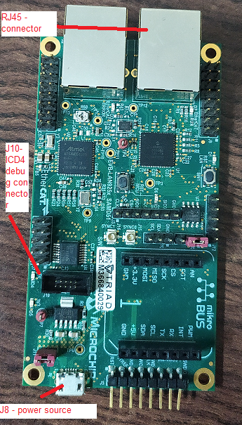
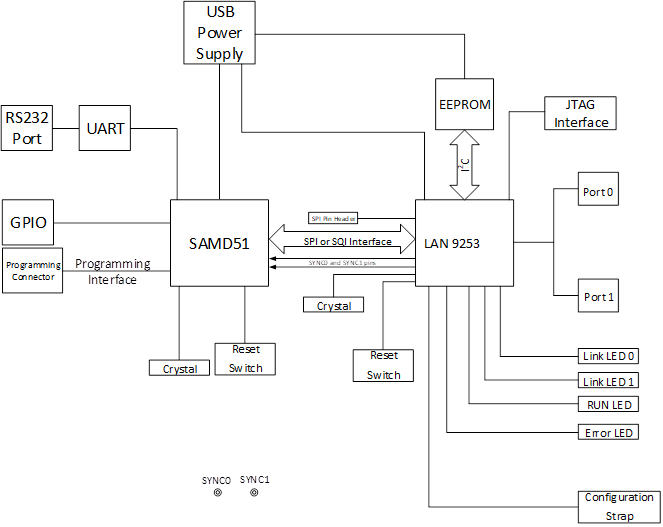
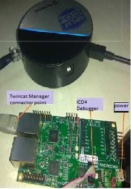
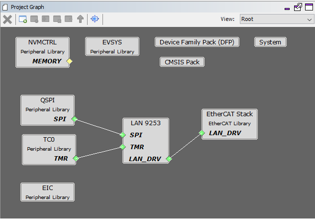
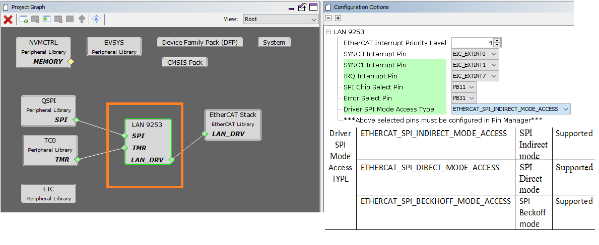
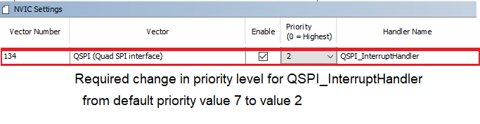
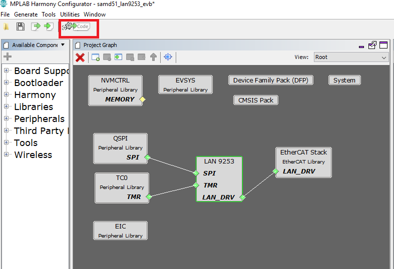
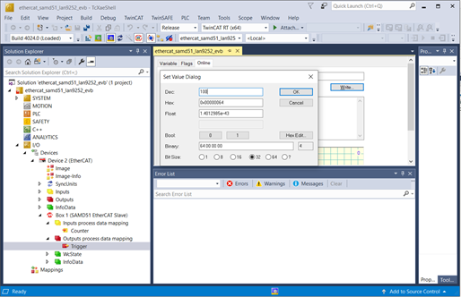
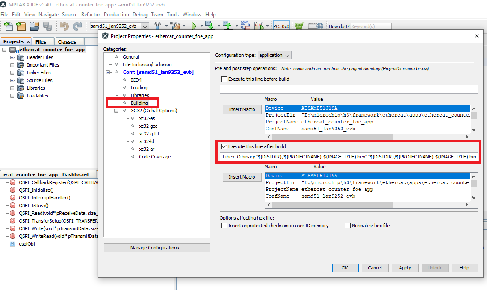
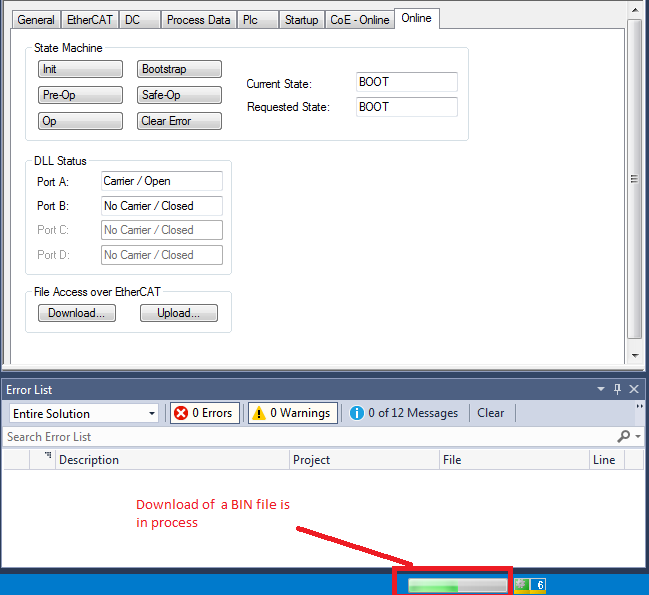

EtherCAT Counter FoE Application for EVM_LAN9253_SAMD51
This EtherCAT example application demonstrates the capable of doing firmware updates via FoE (File over EtherCAT) and EtherCAT Master ( TwinCAT Master ) slave ( EtherCAT LAN9253) communication with EVB_LAN9253_SAMD51 micro-controller. Microchip’s EtherCAT provides the information about how to configure and run the application on different EtherCAT platform.
- MPLAB® Harmony Software Setup
- Hardware Setup
- MPLAB Harmony configuration
- Build The EtherCAT Application
- Running The Application
- Slave Stack Code (SSC) Generation
- TwinCAT Manager and Microchip EtherCAT Slave communication
- TwinCAT EtherCAT interface detect and EEPROM Programming
- Trigger and Counter Demonstration
- File over EtherCAT communication
MPLAB® Harmony Software Setup
The following MPLAB® software components are a prerequisite for the rest of the steps in this demonstration. Please follow the download and installation instructions available at below links.
- MPLAB® X Integrated Development Environment
- MPLAB® XC32/32++ C Compiler
- MPLAB® Harmony Configurator
- On the management PC, download and Install on the TwinCAT 3 Engineering Full Setup at https://www.beckhoff.com/english.asp?download/tc3-download-xae.htm. Select the latest TwinCAT 3.1 Version and click on the link. Note the dialog box shows the TwinCAT tool that will be installed TC31-Full-Setup.3.1.XXXX.XX and click on “Start Download”. Follow instructions to download.
Hardware Setup
The following tools can be used to program and debug the application on the target hardware.
- MPLAB® ICD4 + ICD4/PICKIT 3 Target Adapter Board using JTAG interface.
The following development board will be used to develop and run EtherCAT application for the SAMD51 device family. The instructions in this guide are applicable to any of these development boards. Hardware settings are board dependent and may vary between boards.
- Connect a micro USB cable to J8 port for power source.
- For programming, Connect a ICD4 JTAG cable to the J10 port of the EVB_LAN9253_SAMD51.
-
RJ45 connector is connected to the TwinCAT Manager using J1 port.

-
Block diagram of the EVB_LAN9253_SAMD51 board -

-
Complete HW Setup

MPLAB Harmony configuration
There are two options available for downloading/installing the MPLAB® Harmony Software Repositories from github & gitee.
The required repositories can be cloned from the github (or gitee) by using a local git client (such git bash). The MPLAB® Harmony Repositories are available at the following links:
https://github.com/Microchip-MPLAB-Harmony/
https://gitee.com/Microchip-MPLAB-Harmony/
The csp, dev_packs, mhc and ethercat repositories should be cloned. The repositories can also be cloned (downloaded) or previously downloaded repositories can be updated by using the MPLAB® Harmony 3 Content Manager. The following sections provide details on using the MPLAB® Harmony 3 Content Manager to download the repositories.
-
Refer to the EtherCAT MPLAB® Harmony Software Setup https://github.com/Microchip-MPLAB-Harmony/ethercat/wiki/create-your-first-ethercat-application details to create a EtherCAT project.
-
The following Project Graph diagram shows the required Harmony components which are included for the present EtherCAT application for the EVB_LAN9253_SAMD51.

- Click on the EtherCAT Stack in the Project Graph window. In the Configuration window,
- The Slave Stack source directory path points to the folder that contains the files generated by the SSC tool.
- Enable FoE checkbox enables File over EtherCAT feature.

- Click on LAN9253 component from the project graph.
- EtherCAT Interrupt Priority Level :- This is the range, equal to or more than this value, all the interrupts will be disabled during EtherCAT interrupt handler in process.
-
Following table maps EtherCAT interrupt name with respective peripheral channel selection. EIC interrupt handler and the SPI chip select Configuration for EVB_LAN9253_SAMD51
Interrupt Name EIC Channel SYNC0 Interrupt EIC_EXTINT0 SYNC1 Interrupt EIC_EXTINT1 IRQ Interrupt EIC_EXTINT7 Other Usage Port Pin SPI Chip Select PORT RB11 Error Select Pin PORT RB31
NOTE - As per the Microcontroller and LAN9253 interrupt support, EIC/GPIO/PIO pins can be selected for External event registration and event handler processing.

SPI Cofiguration Mode Supported Description ETHERCAT_SPI_INDIRECT_MODE_ACCESS SPI Indirect Mode ETHERCAT_SPI_DIRECT_MODE_ACCESS SPI Direct Mode ETHERCAT_SPI_BECKHOFF_MODE_ACCESS SPI Beckhoff Mode -
EIC, QSPI and TC0 are configured as per the application requirement.
-
These are the below PINs configured for the application
-
QSPI PIN Configuration for EVB_LAN9253_SAMD51
QSPI Custom Name Function PORT PIN ID QSPI_MOSI QSPI_DATA0 PA08 QSPI_MISO QSPI_DATA1 PA09 QSPI_SCK QSPI_SCK PB10 SPI_CS GPIO PB11 -
PIN Configuration for EtherCAT External Interrupt Pins for EVB_LAN9253_SAMD51
EIC Custom Name EIC Channel Port Pin EIC_EXTINT0 EIC_EXTINT0 PORT PB16 EIC_EXTINT1 EIC_EXTINT1 PORT PB17 EIC_EXTINT7 EIC_EXTINT7 PORT PB23

-
-
Open NVIC configuration window from MHC→Tools. The QSPI Interrupt Priority Level to 2 and it is below to the configured parameter of the EtherCAT Interrupt Priority Level from LAN9253 component .

-
The application will use the default clock options. No changes are required in clock settings.
-
Generate the code by clicking the Generate Code button (marked in red).

-
This following diagram presents the One Click generated EtherCAT project, which is without Slave stack code except sample_app.c file. Slave stack code will be generated using SSC tool with the required configuration and Microchip-SAMD51-EtherCAT-Slave_SSC_Config.xml file. Right side is the EtherCAT project with supported SSC stack files.

Building The EtherCAT Application
This section identifies the MPLAB X IDE projects for the ethercat_counter_foe_app demonstration application. The following table list the MPLAB X projects available for this demonstration. These projects are available inside < install-dir >/ethercat/apps/ethercat_counter_foe_app/firmware .
-
MPLABx project table
Project Name Target Device Target Development board Description sam_d51_lan9253_evb.X ATSAMD51J19A EVB-LAN9253_SAMD51 ETherCAT evaluation board with LAN9253 -
At this point, the project will contain the MPLAB® Harmony components required for an EtherCAT application. The EtherCAT application files can now be added to the project.
The MPLAB® Harmony EtherCAT repository contains an EtherCAT demo application. The source files for which are available in Harmony_Repo_Path/h3/ethercat/apps/ethercat_counter_foe_app/firmware/src.
-
The app_lan9253.c, app.h, main.c files are updated to demonstrate the application.
-
The apps\ethercat_counter_foe_app\firmware\src\config\samd51_lan9253_evb\ethercat_foe.ld linker file is a modified linker file which is used for FOE application. ROM_LENGTH of the linker file is modified to 0x40000 for ATSAMD51J19A. The memory mapped for Bank A is from 0x00000 to 0x3FFFF and the memory mapped for Bank B is from 0x40000 to 0x7FFFF.
The Dual Bank feature enables a FoE firmware to execute from the NVM and at the same time the program to the flash with a new version of itself.After programming is completed the APP_BankSwitch() application function is used to swap the banks and to reset the device. APP_RunApplication() is sued to run the new firmware to be executed.
-
The sample application files sample_app.c, sample_app.h and sample_appObjects.h which are generated by SSC tool and are updated for the application requirement.

These are the above files which are already shared with EtherCAT ethercat_counter_foe_app demo release.
-
Verify the XC32 Compiler Toolchain version and set the Connected Hardware Tool to ICD4 or PICkit 3. Press Apply button and then press OK button.
-
Build the application by clicking on the Build Main Project.
Running The Application
Slave Stack Code (SSC) Generation
Steps to generate Slave Stack Code
TwinCAT Manager and Microchip EtherCAT Slave communication
TwinCAT EtherCAT interface detect and EEPROM Programming
-
Upon successful installation of the TwinCAT Manager, the network adapter will be moved to Installed and ready to use devices section as shown in the following figure.

Please find the below table for the available Slave configuration files which are generated by SSC tool.
Slave Configuration File Mode SAMD51_SPI_Indirect_Mode.xml SPI Indirect mode SAMD51_SPI_Direct_mode.xml SPI Direct mode MSAMD51_SPI_Beckhoff_mode.xml SPI Beckhoff mode Copy the required configuration file as per the configuration mode is selected during MHC Lan9253 Component configuration from < harmony-repo >/ethercat/slave_stack/lan9253/ directory to the TwinCAT\3.1\Config\Io\EtherCAT directory.
-
In TwinCAT XAE, create a New Project (File=>New=>Project). In the New Project Window, select the TwinCAT Projects option and then click OK

-
Connect Port zero of the device to the EtherCAT master using a RJ45 Ethernet cable, and then power up the board. The Link/Act LED should be ON at Port zero when the cable is connected. If the Link/Act LED is not ON, this indicates that there is an issue with the connection or the cable.
-
Expand the IO option in the TwinCAT XAE project window and right click on Devices. Select Scan.

-
Click OK if the TwinCAT network interface is selected and continue scanning as shown in the below image.

-
Click OK to continue scanning and Click Yes in the Scan for boxes prompt.

-
EEPROM Programming After a successful scan, click on Device 2 (EtherCAT) in the solution explorer window of the TwinCAT tool and Click Online in the TwinCAT project window. Once this is done, highlight the Device, and it should read OP.

Trigger and Counter Demonstration
-
Input Trigger configuration - From I/O level on the Solution Explorer (left window), go to Devices=>Device # (EtherCAT)=>Box 1 (SAMD51 EtherCAT Slave)=>Outputs process data mapping=>Trigger.
-
In the top center window, select Online tab. Click Write and then enter 1 in Decimal: field and click OK.

-
Output Counter Observation - From I/O level on the Solution Explorer (left window), go to Devices=>Device # (EtherCAT)=>Box 1 (SAMD51 EtherCAT Slave)=>Inputs process data mapping=>Counter.
-
In the top center window, select Online tab. The counter should be incrementing.

File over EtherCAT communication
-
FoE (File over EtherCAT) Test Update - Click on Box1, Select “Online” tab. Before FoE test Curent state and Requested state should be in OP mode.

-
For file download, change the mode from INIT to BOOT mode.

-
After clicking Download button , select BIN file that need to be downloaded and configure the Password as per the EtherCAT component password configuration.

One can find the sample BIN files in < harmony-repo >/ethercat/apps/ethercat_counter_foe_app/firmware/src\FoE_Bin_imagefiles\lan9253_foe_binfiles which can be used for the FoE verification.
NOTE - One can generate BIN file from the generated EtheCAT HEX image after configuring the Project Properties->Conf:->Building->Execute This Line After Build ${MP_CC_DIR}/xc32-objcopy” -I ihex -O binary “${DISTDIR}/${PROJECTNAME}.${IMAGE_TYPE}.hex” “${DISTDIR}/${PROJECTNAME}.${IMAGE_TYPE}.bin

NOTE - Please uncheck Execute This Line After Build option for a debug session of this project.
-
The download process can be tracked as shown in the figure below-

-
After successful download, change the state from BOOT to INIT mode. This helps the application switch the bank from BANK B to BANK A and the newly downloaded firmware will be executed from BANK A. The new application starts running from flash location 0x0.